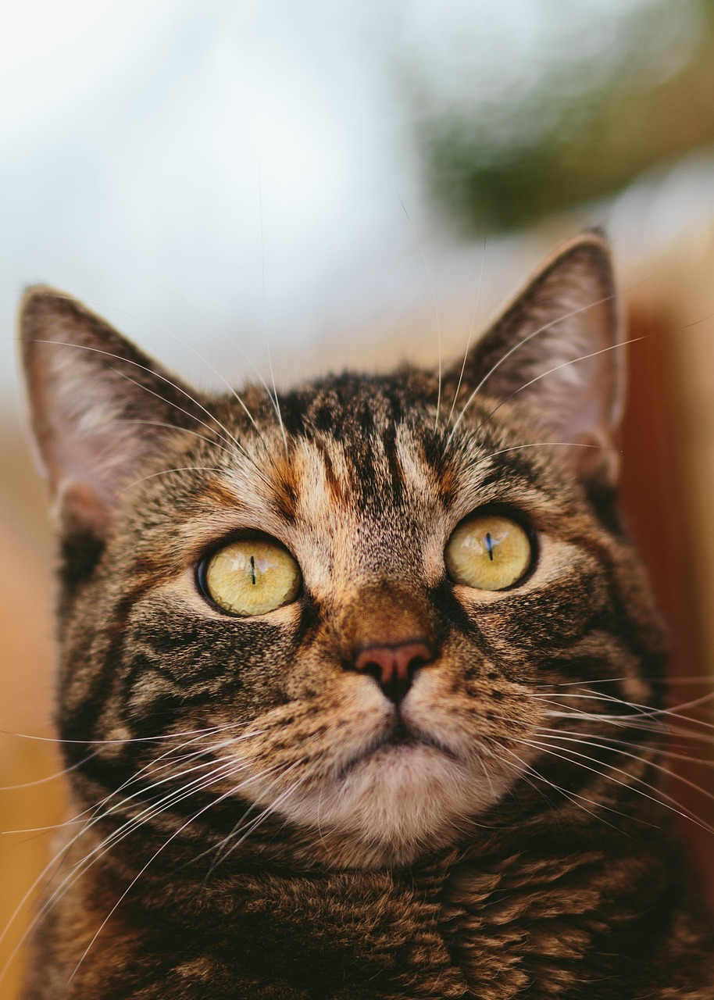
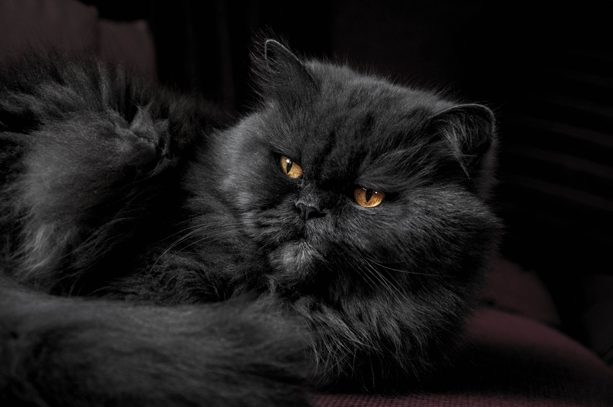

Témoignage : l'adoption de Mimi
Une famille de Rennes a adopté un Européen de deux ans en 2025. Six mois plus tard, elle témoigne : « Mimi s'est adaptée en quelques jours à peine, et fait maintenant partie de la famille. »


Le chat est un animal très répandu dans les foyers français. Sa popularité vient en partie de son indépendance, appréciée par de nombreux proproétaires.
Chaque race possède des besoins spécifiques, notamment en matière d'entretien du pelage.
| Race | Taille | Caractère | l’espérance de vie moyenne |
|---|---|---|---|
| Européen | Moyenne | Sociable et joueur, s'adapte facilement à la vie de famille. | 12 et 15 ans |
| Maine Coon | Grande | Calme et affectueux. | 12 à 15 ans |
| Siamois | Moyenne | Vif et communicatif, réclame beaucoup d'attention. | 15 à 20 ans |
| Persan | Moyenne | Placide. | 12 à 17 ans |
| Bengal | Grande | Discret. | 12 à 16 ans |
Chaque race possède des besoins spécifiques, notamment en matière d'entretien du pelage.
Une famille de Rennes a adopté un Européen de deux ans en 2025. Six mois plus tard, elle témoigne : « Mimi s'est adaptée en quelques jours à peine, et fait maintenant partie de la famille. »
Chaque chat a un nez unique.